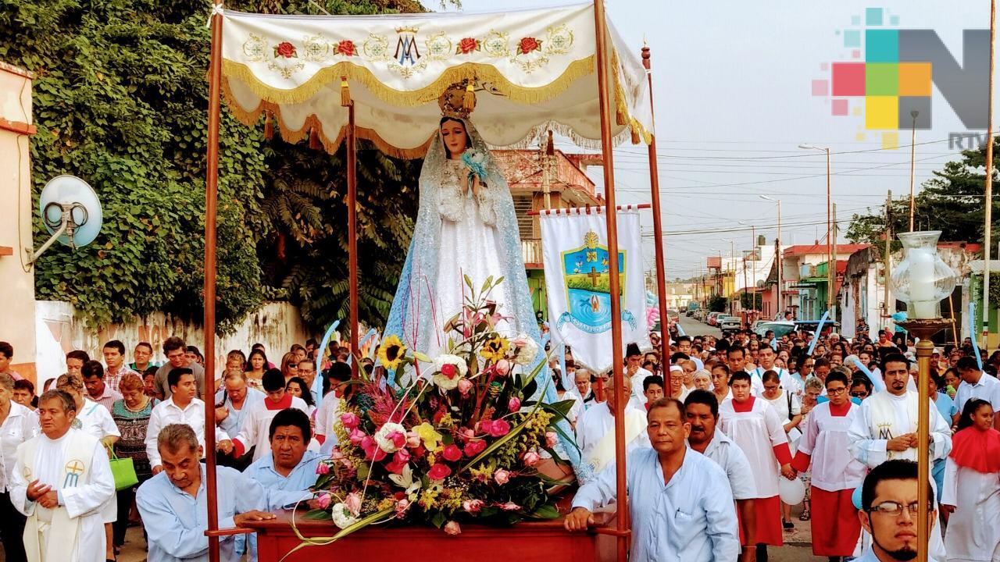
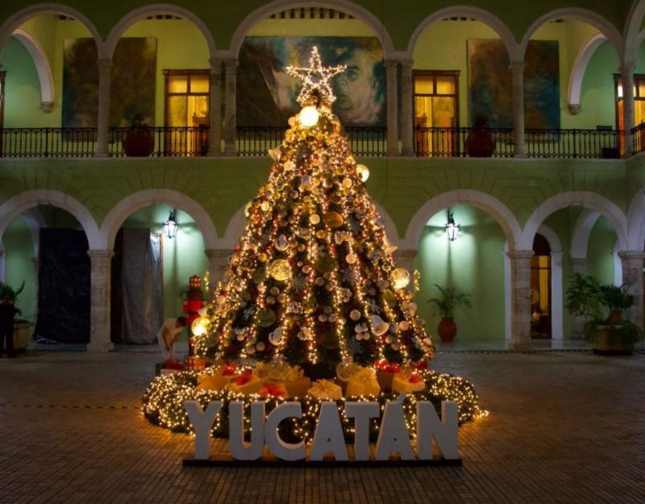
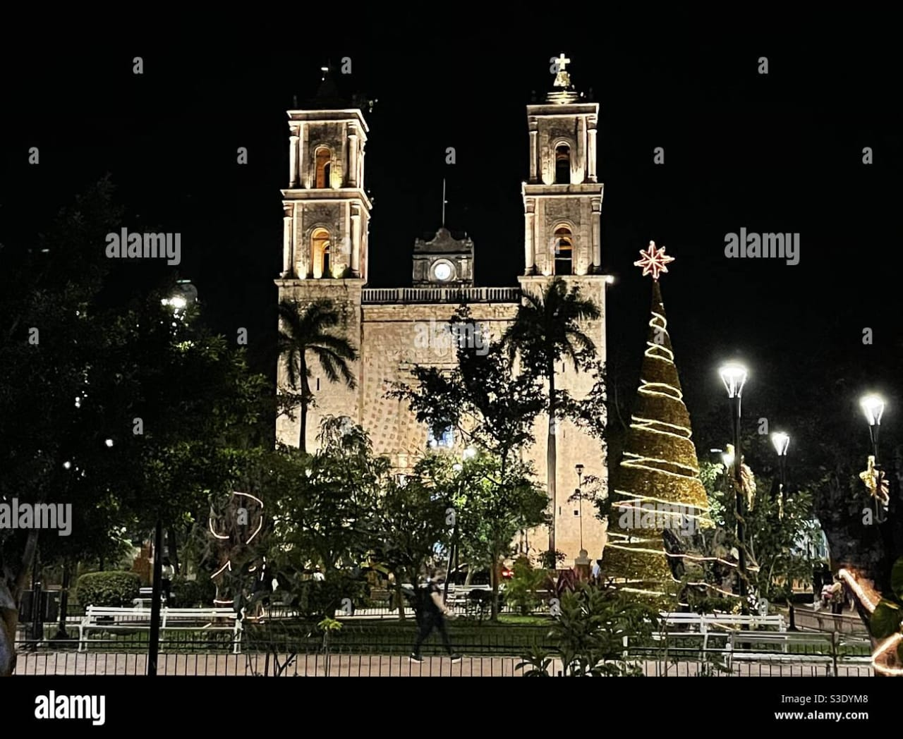

Día de la Virgen de la Inmaculada Concepción:
En Izamal, se celebra la fiesta de la Virgen de la Inmaculada
Concepción el 8 de diciembre con una impresionante iluminación de la
ciudad y actividades religiosas.
El Día de la Virgen de la Inmaculada Concepción es una
celebración religiosa que honra la creencia católica de que la Virgen
María fue concebida sin pecado original. En Yucatán, esta festividad se
celebra con gran devoción y alegría, especialmente en la ciudad de
Izamal, donde la Virgen de la Inmaculada Concepción es la patrona de la
ciudad.El 8 de diciembre de cada año, Izamal se llena de color y
festividad para conmemorar a su patrona. Las calles se adornan con
guirnaldas, flores y luces, y se realizan procesiones solemnes en honor
a la Virgen. Se celebran misas especiales en la iglesia principal,
donde los fieles acuden para rendir homenaje a la Virgen María y pedir
su intercesión.

Día de los Santos: El Día de Todos los Santos y el Día de los Fieles Difuntos (Hanal Pixán) son celebraciones tradicionales donde las familias honran a sus seres queridos fallecidos con altares decorados con ofrendas.
El Día de Todos los Santos, celebrado el 1 de noviembre, y el Día de
los Fieles Difuntos o Día de Muertos, celebrado el 2 de noviembre, son
dos festividades que se conmemoran en Yucatán y en muchas otras partes
de México.
El Día de Todos los Santos es una celebración dedicada a honrar a todos
los santos conocidos y desconocidos, mientras que el Día de los Fieles
Difuntos está destinado a recordar y rezar por las almas de los seres
queridos que han fallecido. Durante estas festividades, las familias
yucatecas acuden a los cementerios para limpiar y decorar las tumbas de
sus seres queridos con flores, velas, y otros elementos decorativos.
En Yucatán, el Día de Muertos se conoce como Hanal Pixán, que significa
"comida de las almas" en lengua maya. Durante esta celebración, se
preparan altares en los hogares con fotografías de los difuntos y
ofrendas de comida y bebida que solían disfrutar en vida. Se cree que
durante Hanal Pixán, las almas de los difuntos regresan al mundo de los
vivos para compartir con sus seres queridos, y por eso se les recibe
con alegría y cariño.
Hanal Pixán es una celebración colorida y llena de simbolismo, que
combina elementos de la religión católica con tradiciones prehispánicas
mayas, y que refleja la profunda conexión espiritual y cultural de
Yucatán con sus antepasados y con la naturaleza.
Navidad
La
Navidad se celebra con misas de gallo, posadas, piñatas y otras
tradiciones navideñas tanto religiosas como culturales.La Navidad es
una festividad cristiana que se celebra el 25 de diciembre en todo el
mundo, incluyendo Yucatán, México. Esta celebración conmemora el
nacimiento de Jesucristo y es una ocasión para la reunión familiar, la
reflexión religiosa y la generosidad.
En Yucatán, la Navidad se celebra con
una combinación de tradiciones religiosas y costumbres culturales.
Algunas de las actividades y tradiciones típicas de la Navidad en
Yucatán incluyen:
1. Misas de gallo:
Se celebran misas especiales en las iglesias durante la Nochebuena para
conmemorar el nacimiento de Jesucristo. Muchas familias acuden a la
iglesia para participar en la misa de medianoche.
2. Posadas:
Las posadas son una tradición mexicana que se celebra durante los nueve
días previos a la Navidad, del 16 al 24 de diciembre. Las posadas
recrean el viaje de María y José en busca de posada antes del
nacimiento de Jesús, y suelen incluir procesiones, música, comida y
piñatas.
3. Decoraciones navideñas:
Las casas, calles y plazas se decoran con luces, árboles de Navidad,
nacimientos y otros adornos festivos. La ciudad de Mérida, capital de
Yucatán, suele adornarse con luces y decoraciones navideñas
espectaculares.
4. Comidas y dulces navideños: La
cena de Nochebuena es una ocasión especial para compartir en familia y
disfrutar de platillos típicos de la temporada, como el pavo, el
bacalao, los tamales y el ponche navideño. También se preparan y se
comparten dulces tradicionales, como los buñuelos y el ponche de frutas.
5. Regalos:
Al igual que en otras partes del mundo, en Yucatán se intercambian
regalos entre familiares y amigos como muestra de afecto y generosidad.
La Navidad es una época de alegría,
solidaridad y tradición en Yucatán, donde las familias y comunidades se
reúnen para celebrar y compartir momentos especiales en un ambiente
festivo y acogedor.


VESTIMENTA TRADICIONAL
La vestimenta
tradicional de Yucatán refleja la rica herencia cultural de la región y
tiene influencias de la cultura maya y española. Algunas prendas y
elementos característicos de la vestimenta tradicional yucateca son:
1. Huipil: El huipil es
una blusa típica de origen prehispánico que se usa tanto por hombres
como por mujeres. Suele estar decorado con bordados coloridos y
patrones geométricos que representan motivos ancestrales y símbolos de
la naturaleza.
2. Guayabera: La
guayabera es una camisa de algodón ligero con mangas cortas, botones en
la parte delantera y pliegues verticales. Es una prenda cómoda y fresca
que se usa en ocasiones especiales y eventos formales.
3. Terno: El terno es un
traje típico de los hombres yucatecos, compuesto por una camisa de
manga larga, un chaleco sin mangas y un pantalón a juego. Los ternos
suelen ser de colores neutros y oscuros, con detalles bordados en el
chaleco y los puños de la camisa.
4. Hipil: El hipil es un
vestido largo y amplio que se usa principalmente por las mujeres
indígenas de Yucatán. Está hecho de una sola pieza de tela y se
caracteriza por sus bordados elaborados y su diseño holgado y cómodo.
5. Henequén: El henequén
es una fibra vegetal que se utiliza para tejer sombreros, bolsas y
otros accesorios tradicionales en Yucatán. Los sombreros de henequén
son especialmente populares y se pueden encontrar en una variedad de
estilos y tamaños.